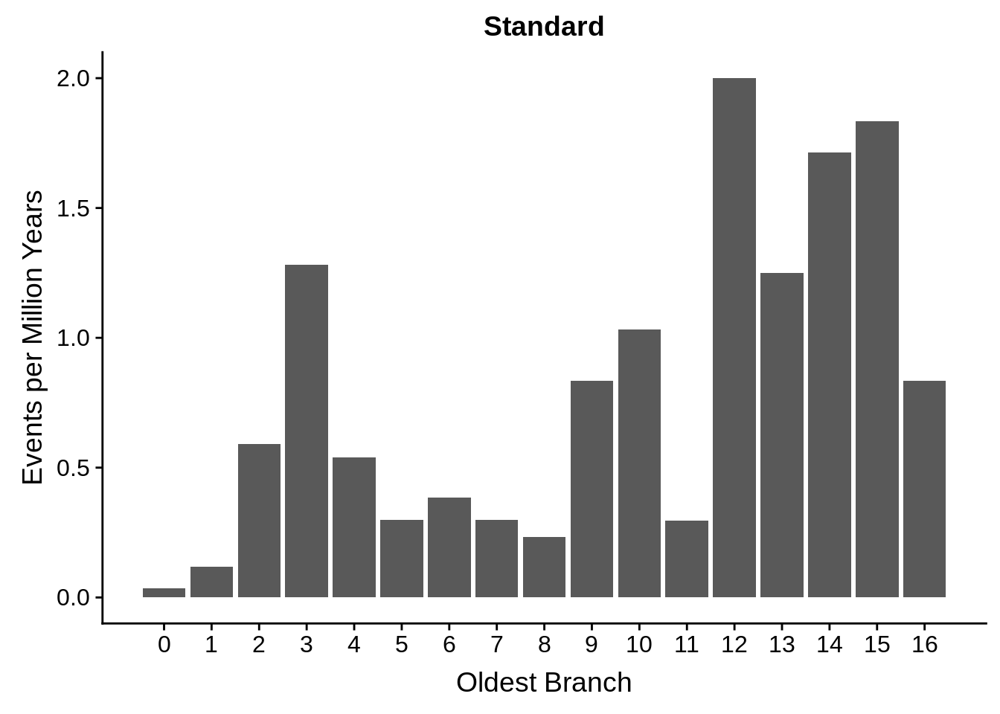
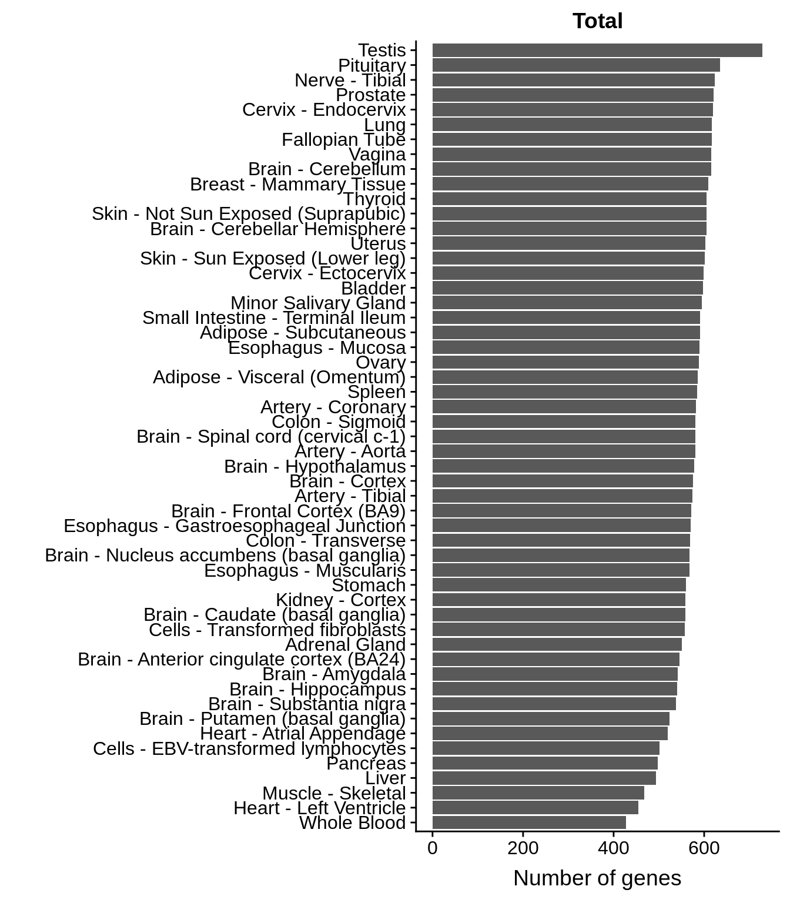
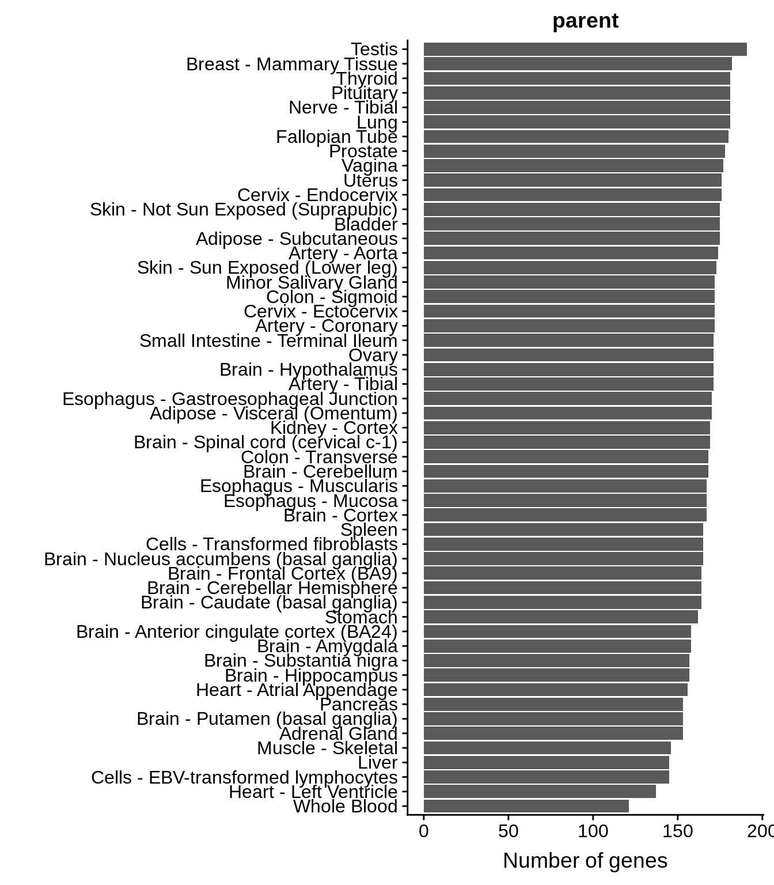
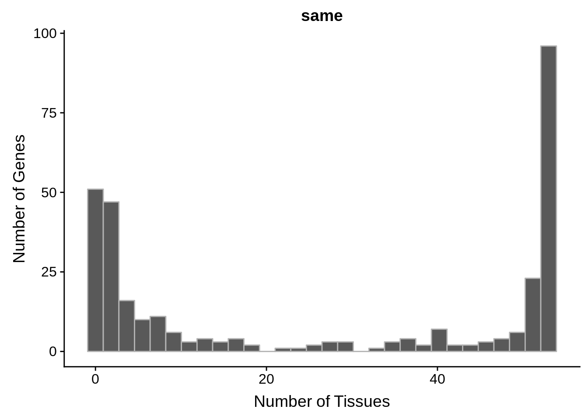
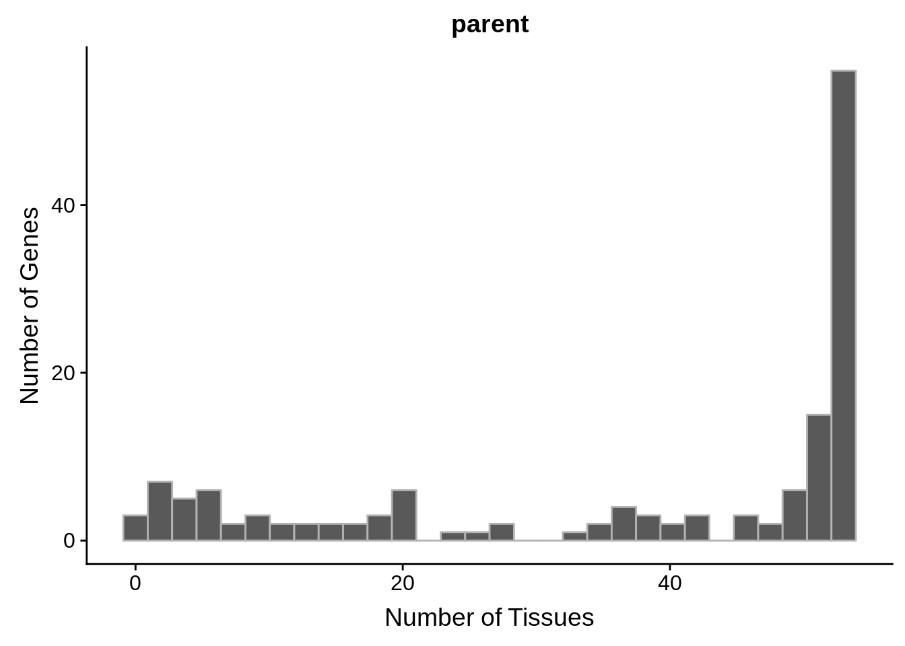
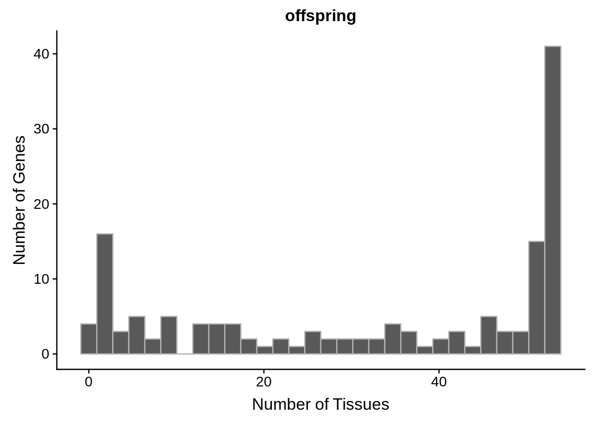
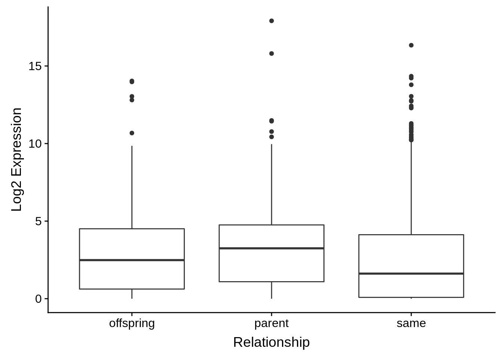
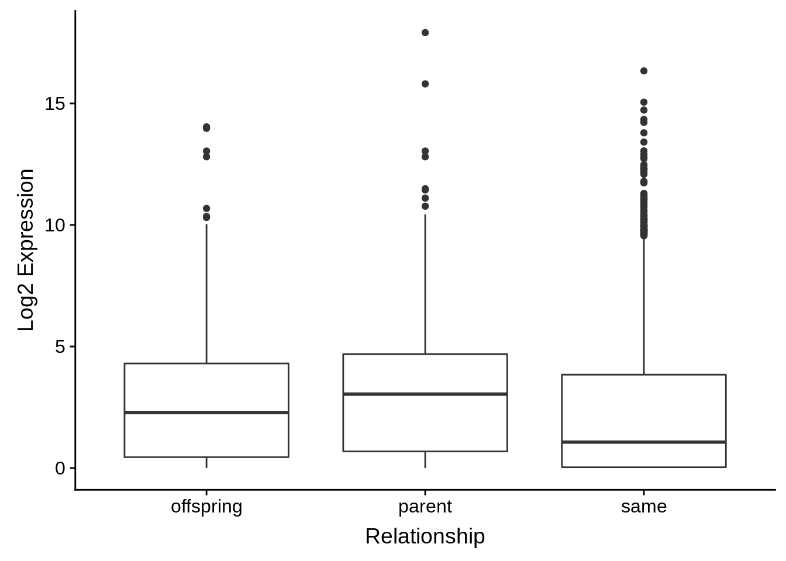

Aging
Philipp Ross
2018-10-06
Last updated: 2018-11-12
workflowr checks: (Click a bullet for more information)-
✖ R Markdown file: uncommitted changes
The R Markdown file has unstaged changes. To know which version of the R Markdown file created these results, you’ll want to first commit it to the Git repo. If you’re still working on the analysis, you can ignore this warning. When you’re finished, you can runwflow_publishto commit the R Markdown file and build the HTML. -
✔ Environment: empty
Great job! The global environment was empty. Objects defined in the global environment can affect the analysis in your R Markdown file in unknown ways. For reproduciblity it’s best to always run the code in an empty environment.
-
✔ Seed:
set.seed(12345)The command
set.seed(12345)was run prior to running the code in the R Markdown file. Setting a seed ensures that any results that rely on randomness, e.g. subsampling or permutations, are reproducible. -
✔ Session information: recorded
Great job! Recording the operating system, R version, and package versions is critical for reproducibility.
-
Great! You are using Git for version control. Tracking code development and connecting the code version to the results is critical for reproducibility. The version displayed above was the version of the Git repository at the time these results were generated.✔ Repository version: 435b43e
Note that you need to be careful to ensure that all relevant files for the analysis have been committed to Git prior to generating the results (you can usewflow_publishorwflow_git_commit). workflowr only checks the R Markdown file, but you know if there are other scripts or data files that it depends on. Below is the status of the Git repository when the results were generated:
Note that any generated files, e.g. HTML, png, CSS, etc., are not included in this status report because it is ok for generated content to have uncommitted changes.Ignored files: Ignored: .RData Ignored: .Rhistory Ignored: .Rproj.user/ Ignored: analysis/figure/ Untracked files: Untracked: docs/figure/final_tables.Rmd/ Untracked: output/final_tables/offpsring_biological_process_go_enrichment.svg Untracked: output/final_tables/offpsring_bpcount_table.tsv Untracked: output/final_tables/offpsring_mfcount_table.tsv Untracked: output/final_tables/offpsring_molecular_function_go_enrichment.svg Untracked: output/final_tables/parent_biological_process_go_enrichment.svg Untracked: output/final_tables/parent_bpcount_table.tsv Untracked: output/final_tables/parent_mfcount_table.tsv Untracked: output/final_tables/parent_molecular_function_go_enrichment.svg Unstaged changes: Modified: README.md Modified: analysis/aging.Rmd Modified: analysis/final_tables.Rmd Modified: analysis/index.Rmd Modified: analysis/parse_blast.Rmd Modified: output/aging/conservative_events_over_time.svg Modified: output/aging/conservative_normalized_events.tsv Modified: output/aging/standard_events_over_time.svg Modified: output/aging/standard_normalized_events.tsv
Expand here to see past versions:
| File | Version | Author | Date | Message |
|---|---|---|---|---|
| Rmd | 435b43e | Philipp Ross | 2018-11-06 | update |
| Rmd | 938af07 | Philipp Ross | 2018-11-06 | analysis finished |
| html | 938af07 | Philipp Ross | 2018-11-06 | analysis finished |
| html | 3b75970 | Philipp Ross | 2018-10-16 | Build site. |
| Rmd | 6be1a49 | Philipp Ross | 2018-10-16 | workflowr::wflow_publish(all = T) |
| Rmd | 0fbcc9f | Philipp Ross | 2018-10-06 | first commit; finished parsing blast results |
| html | 0fbcc9f | Philipp Ross | 2018-10-06 | first commit; finished parsing blast results |
We woud like to categorize the genes into parent and offspring pairs. In order to do this, we need to estimate the earliest common ancestor with an orthologue of these genes.
library(tidyverse)── Attaching packages ──────────────────────────────────────────────────────────────────────────────────────── tidyverse 1.2.1 ──✔ ggplot2 3.0.0 ✔ purrr 0.2.5
✔ tibble 1.4.2 ✔ dplyr 0.7.6
✔ tidyr 0.8.1 ✔ stringr 1.3.1
✔ readr 1.1.1 ✔ forcats 0.3.0── Conflicts ─────────────────────────────────────────────────────────────────────────────────────────── tidyverse_conflicts() ──
✖ dplyr::filter() masks stats::filter()
✖ dplyr::lag() masks stats::lag()library(cowplot)
Attaching package: 'cowplot'The following object is masked from 'package:ggplot2':
ggsavelibrary(org.Hs.eg.db)Loading required package: AnnotationDbiLoading required package: stats4Loading required package: BiocGenericsLoading required package: parallel
Attaching package: 'BiocGenerics'The following objects are masked from 'package:parallel':
clusterApply, clusterApplyLB, clusterCall, clusterEvalQ,
clusterExport, clusterMap, parApply, parCapply, parLapply,
parLapplyLB, parRapply, parSapply, parSapplyLBThe following objects are masked from 'package:dplyr':
combine, intersect, setdiff, unionThe following objects are masked from 'package:stats':
IQR, mad, sd, var, xtabsThe following objects are masked from 'package:base':
anyDuplicated, append, as.data.frame, basename, cbind,
colMeans, colnames, colSums, dirname, do.call, duplicated,
eval, evalq, Filter, Find, get, grep, grepl, intersect,
is.unsorted, lapply, lengths, Map, mapply, match, mget, order,
paste, pmax, pmax.int, pmin, pmin.int, Position, rank, rbind,
Reduce, rowMeans, rownames, rowSums, sapply, setdiff, sort,
table, tapply, union, unique, unsplit, which, which.max,
which.minLoading required package: BiobaseWelcome to Bioconductor
Vignettes contain introductory material; view with
'browseVignettes()'. To cite Bioconductor, see
'citation("Biobase")', and for packages 'citation("pkgname")'.Loading required package: IRangesLoading required package: S4Vectors
Attaching package: 'S4Vectors'The following objects are masked from 'package:dplyr':
first, renameThe following object is masked from 'package:tidyr':
expandThe following object is masked from 'package:base':
expand.grid
Attaching package: 'IRanges'The following objects are masked from 'package:dplyr':
collapse, desc, sliceThe following object is masked from 'package:purrr':
reduce
Attaching package: 'AnnotationDbi'The following object is masked from 'package:dplyr':
selectOrtholog retrieval
We can use biomart to download several orthologs and find out how far back we can date these genes.
conservative_gene_list <- readr::read_tsv("../output/thirdset/conservative_reciprocal_best_hits.tsv",col_names=T)$queryParsed with column specification:
cols(
query = col_character(),
subject = col_character()
)standard_hits <- readr::read_tsv("../output/thirdset/standard_hits.tsv",col_names=T)Parsed with column specification:
cols(
query = col_character(),
subject = col_character()
)standard_gene_list <- dplyr::union(standard_hits$query,standard_hits$subject)
human <- biomaRt::useMart("ensembl", dataset = "hsapiens_gene_ensembl")
chimp <- biomaRt::useMart("ensembl", dataset = "ptroglodytes_gene_ensembl")
orangutan <- biomaRt::useMart("ensembl", dataset = "pabelii_gene_ensembl")
rhesus <- biomaRt::useMart("ensembl", dataset = "mmulatta_gene_ensembl")
marmoset <- biomaRt::useMart("ensembl", dataset = "cjacchus_gene_ensembl")
mouse <- biomaRt::useMart("ensembl", dataset = "mmusculus_gene_ensembl")
guinea_pig <- biomaRt::useMart("ensembl", dataset = "cporcellus_gene_ensembl")
dog <- biomaRt::useMart("ensembl", dataset = "cfamiliaris_gene_ensembl")
cow <- biomaRt::useMart("ensembl", dataset = "btaurus_gene_ensembl")
armadillo <- biomaRt::useMart("ensembl", dataset = "dnovemcinctus_gene_ensembl")
opossum <- biomaRt::useMart("ensembl", dataset = "mdomestica_gene_ensembl")
platypus <- biomaRt::useMart("ensembl", dataset = "oanatinus_gene_ensembl")
chicken <- biomaRt::useMart("ensembl", dataset = "ggallus_gene_ensembl")
lizard <- biomaRt::useMart("ensembl", dataset = "acarolinensis_gene_ensembl")
frog <- biomaRt::useMart("ensembl", dataset = "xtropicalis_gene_ensembl")
coelacanth <- biomaRt::useMart("ensembl", dataset = "lchalumnae_gene_ensembl")
fugu <- biomaRt::useMart("ensembl", dataset = "trubripes_gene_ensembl")
zebrafish <- biomaRt::useMart("ensembl", dataset = "drerio_gene_ensembl")
hagfish <- biomaRt::useMart("ensembl", dataset = "eburgeri_gene_ensembl")
lamprey <- biomaRt::useMart("ensembl", dataset = "pmarinus_gene_ensembl")
worm <- biomaRt::useMart("ensembl", dataset = "celegans_gene_ensembl")
fly <- biomaRt::useMart("ensembl", dataset = "dmelanogaster_gene_ensembl")
yeast <- biomaRt::useMart("ensembl", dataset = "scerevisiae_gene_ensembl")
species_lookup_table <- c("human","chimp","orangutan","rhesus","marmoset","mouse",
"guinea_pig","dog","cow","armadillo","oppossum","platypus",
"chicken","lizard","frog","coelacanth","fugu","zebrafish",
"hagfish","lamprey","worm","fly","yeast")
#species_lookup_table <- c("human","chimp","orangutan","rhesus","marmoset","mouse",
# "guinea_pig","dog","cow","armadillo","oppossum","platypus",
# "chicken","lizard","frog","coelacanth","fugu","zebrafish",
# "worm","fly","yeast")
branch_lookup_table <- c("16","15","14","13","12","11","11","10","10","9","8",
"7","6","6","5","4","3","3","2","2","1","1","0")
#branch_lookup_table <- c("15","14","13","12","11","10","10","9","9","8",
# "7","6","5","5","4","3","2","2","1","1","0")
branch_lengths <- tibble(branch=c(16:0),branch_length=c(6,6,7,12,18,27,30,60,60,90,60,30,50,100,250,500,700))
dbs <- c(human,chimp,orangutan,rhesus,marmoset,mouse,guinea_pig,dog,cow,
armadillo,opossum,platypus,chicken,lizard,frog,coelacanth,fugu,
zebrafish,hagfish,lamprey,worm,fly,yeast)
#dbs <- c(human,chimp,orangutan,rhesus,marmoset,mouse,guinea_pig,dog,cow,
# armadillo,opossum,platypus,chicken,lizard,frog,coelacanth,fugu,
# zebrafish,worm,fly,yeast)# Function to retrieve homologs from non-human species and return the:
# human gene id
# alternative organism gene id
# alternative organism name
# the branch number corresponding to the last common ancestor of the two homologs
retrieve_orhologs <- function(species_lookup_table, branch_lookup_table, dbs, gene_list) {
out <- tibble::tibble(human_id=character(),
ortholog_id=character(),
organism=character())
for (i in 2:length(species_lookup_table)) {
result <- biomaRt::getLDS(
attributes = c("ensembl_gene_id"),
filters = "ensembl_gene_id",
values = gene_list,
mart = human,
attributesL = c("ensembl_gene_id"),
martL = dbs[[i]])
result <- dplyr::rename(result,human_id=Gene.stable.ID,ortholog_id=Gene.stable.ID.1) %>%
dplyr::mutate(organism=species_lookup_table[i],branch=branch_lookup_table[i]) %>%
tibble::as_tibble()
out <- dplyr::bind_rows(out,result)
}
return(out)
}Conservative set orthologs
conservative_orthos <- retrieve_orhologs(species_lookup_table,branch_lookup_table,dbs,conservative_gene_list)
conservative_in_humans <- length(unique(conservative_gene_list)) - length(unique(conservative_orthos$human_id))Standard set orthologs
standard_orthos <- retrieve_orhologs(species_lookup_table,branch_lookup_table,dbs,standard_gene_list)
standard_in_humans <- length(unique(standard_gene_list)) - length(unique(standard_orthos$human_id))Parent-offspring assignments
Conservative set
conservative_rbh <- readr::read_tsv("../output/thirdset/conservative_reciprocal_best_hits.tsv",col_names=T)Parsed with column specification:
cols(
query = col_character(),
subject = col_character()
)human_orthos <- conservative_orthos %>%
dplyr::group_by(human_id) %>%
dplyr::summarize(oldest=(min(as.integer(branch)))) %>%
dplyr::ungroup()
tmp1 <- human_orthos %>%
dplyr::inner_join(conservative_rbh, by=c("human_id"="query")) %>%
dplyr::rename(query=human_id,query_branch=oldest)
tmp2 <- human_orthos %>%
dplyr::inner_join(conservative_rbh, by=c("human_id"="subject")) %>%
dplyr::rename(subject=human_id,subject_branch=oldest)
conservative_potbl <- dplyr::inner_join(tmp1,tmp2)Joining, by = c("query", "subject")rm(tmp1,tmp2)
conservative_potbl$query_relation <- apply(conservative_potbl, 1, function(row) {ifelse(row[[2]] == row[[4]],"same",ifelse(row[[2]] < row[[4]],"parent","offspring"))})
conservative_potbl$subject_relation <- apply(conservative_potbl, 1, function(row) {ifelse(row[[2]] == row[[4]],"same",ifelse(row[[2]] > row[[4]],"parent","offspring"))})
# some genes have more than one annotated gene name? Just keep one.
tmp <- dplyr::inner_join(as.data.frame(org.Hs.egGENENAME),as.data.frame(org.Hs.egENSEMBL)) %>%
dplyr::select(ensembl_id,gene_name) %>%
tibble::as_tibble() Joining, by = "gene_id"gtbl <- list()
for (i in 1:nrow(tmp)) {
row <- tmp[i,]
ifelse(is.null(gtbl[[row$ensembl_id]]),
gtbl[[row$ensembl_id]] <- row$gene_name,
next())
}
gtbl <- tibble::tibble(ensembl_id=names(gtbl),gene_name=as.vector(unlist(gtbl)))
conservative_potbl <- dplyr::inner_join(conservative_potbl,gtbl,by=c("query"="ensembl_id")) %>%
dplyr::rename(query_gene_name=gene_name)
conservative_potbl <- dplyr::inner_join(conservative_potbl,gtbl,by=c("subject"="ensembl_id")) %>%
dplyr::rename(subject_gene_name=gene_name)
query <- conservative_potbl[,c(1,2,5)] %>% dplyr::rename(gene_id=query,branch=query_branch,relation=query_relation)
subject <- conservative_potbl[,c(3,4,6)] %>% dplyr::rename(gene_id=subject,branch=subject_branch,relation=subject_relation)
conservative_plot_this <- dplyr::bind_rows(query,subject) %>% dplyr::distinct()
conservative_normalized_events <- conservative_plot_this %>%
dplyr::group_by(gene_id) %>%
dplyr::group_by(branch,relation) %>%
dplyr::summarize(`Number of genes`=n()) %>%
dplyr::ungroup() %>%
tidyr::spread(key=relation,value=`Number of genes`,fill=0) %>%
dplyr::mutate(`Number of Events`=offspring+(same/2)) %>%
dplyr::inner_join(branch_lengths) %>%
dplyr::bind_rows(.,tibble::tibble(branch=16,offspring=conservative_in_humans,parent=0,same=0,`Number of Events`=conservative_in_humans,branch_length=6)) %>%
dplyr::mutate(`Events per million years`=`Number of Events`/branch_length)Joining, by = "branch"readr::write_tsv(x=conservative_normalized_events,"../output/aging/conservative_normalized_events.tsv")
g <- conservative_normalized_events %>%
ggplot(aes(x=branch,y=`Events per million years`)) +
geom_bar(stat="identity") +
xlab("Oldest Branch") +
ylab("Events per Million Years") +
ggtitle("Conservative") +
scale_x_continuous(breaks=0:16,labels=c("0","1","2","3","4","5","6","7","8","9","10","11","12","13","14","15","16"))
cowplot::save_plot("../output/aging/conservative_events_over_time.svg",g)
cowplot::save_plot("../output/aging/conservative_events_over_time.png",g)
print(g)
Standard set
standard_hits <- readr::read_tsv("../output/thirdset/standard_hits.tsv",col_names=T)Parsed with column specification:
cols(
query = col_character(),
subject = col_character()
)human_orthos <- standard_orthos %>%
dplyr::group_by(human_id) %>%
dplyr::summarize(oldest=(min(as.integer(branch)))) %>%
dplyr::ungroup()
tmp1 <- human_orthos %>%
dplyr::inner_join(standard_hits, by=c("human_id"="query")) %>%
dplyr::rename(query=human_id,query_branch=oldest)
tmp2 <- human_orthos %>%
dplyr::inner_join(standard_hits, by=c("human_id"="subject")) %>%
dplyr::rename(subject=human_id,subject_branch=oldest)
standard_potbl <- dplyr::inner_join(tmp1,tmp2)Joining, by = c("query", "subject")rm(tmp1,tmp2)
standard_potbl$query_relation <- apply(standard_potbl, 1, function(row) {ifelse(row[[2]] == row[[4]],"same",ifelse(row[[2]] < row[[4]],"parent","offspring"))})
standard_potbl$subject_relation <- apply(standard_potbl, 1, function(row) {ifelse(row[[2]] == row[[4]],"same",ifelse(row[[2]] > row[[4]],"parent","offspring"))})
standard_potbl <- dplyr::inner_join(standard_potbl,gtbl,by=c("query"="ensembl_id")) %>%
dplyr::rename(query_gene_name=gene_name)
standard_potbl <- dplyr::inner_join(standard_potbl,gtbl,by=c("subject"="ensembl_id")) %>%
dplyr::rename(subject_gene_name=gene_name)
query <- standard_potbl[,c(1,2,5)] %>% dplyr::rename(gene_id=query,branch=query_branch,relation=query_relation)
subject <- standard_potbl[,c(3,4,6)] %>% dplyr::rename(gene_id=subject,branch=subject_branch,relation=subject_relation)
standard_plot_this <- dplyr::bind_rows(query,subject)
offspring <- integer(length=16)
parent <- integer(length=16)
same <- integer(length=16)
hits <- list()
count <- 0
# loop through table lacking reciprocal best hits making sure we
# count cases of A to B and B to A as one event, but
# cases of A to B and A to C as two events and A to B and B to C as two events
for (i in 1:nrow(standard_potbl)) {
row <- standard_potbl[i,]
qbranch <- row[[2]] + 1
sbranch <- row[[4]] + 1
qrelation <- row[[5]]
srelation <- row[[6]]
if (is.null(hits[[row$query]])) {
if (is.null(hits[[row$subject]])) {
count <- count + 1
hits[[row$query]] <- row$subject
if(qrelation==srelation) {
same[qbranch] <- same[qbranch] + 1
} else if(qrelation=="offspring") {
offspring[qbranch] <- offspring[qbranch] + 1
parent[sbranch] <- parent[sbranch] + 1
} else if(qrelation=="parent") {
offspring[sbranch] <- offspring[sbranch] + 1
parent[qbranch] <- parent[qbranch] + 1
}
next()
} else if (row$query %in% hits[[row$subject]]) {
hits[[row$query]] <- row$subject
next()
} else {
count <- count + 1
hits[[row$query]] <- row$subject
if(qrelation==srelation) {
same[qbranch] <- same[qbranch] + 1
} else if(qrelation=="offspring") {
offspring[qbranch] <- offspring[qbranch] + 1
parent[sbranch] <- parent[sbranch] + 1
} else if(qrelation=="parent") {
offspring[sbranch] <- offspring[sbranch] + 1
parent[qbranch] <- parent[qbranch] + 1
}
}
next()
} else if (row$subject %in% hits[[row$query]]) {
next()
} else {
count <- count + 1
hits[[row$query]] <- c(hits[[row$query]],row$subject)
if(qrelation==srelation) {
same[qbranch] <- same[qbranch] + 1
} else if(qrelation=="offspring") {
offspring[qbranch] <- offspring[qbranch] + 1
parent[sbranch] <- parent[sbranch] + 1
} else if(qrelation=="parent") {
offspring[sbranch] <- offspring[sbranch] + 1
parent[qbranch] <- parent[qbranch] + 1
}
}
next()
}
standard_normalized_events <- tibble::tibble(branch=0:15,
offspring=offspring,
parent=parent,
same=same,
`Number of Events`=offspring+same) %>%
dplyr::inner_join(branch_lengths) %>%
dplyr::bind_rows(tibble::tibble(branch=16,offspring=standard_in_humans,parent=0,same=0,`Number of Events`=standard_in_humans,branch_length=6)) %>%
dplyr::mutate(`Events per million years`=`Number of Events`/branch_length)Joining, by = "branch"readr::write_tsv(x=standard_normalized_events,"../output/aging/standard_normalized_events.tsv")
g <- standard_normalized_events %>%
ggplot(aes(x=branch,y=`Events per million years`)) +
geom_bar(stat="identity") +
xlab("Oldest Branch") +
ylab("Events per Million Years") +
ggtitle("Standard") +
scale_x_continuous(breaks=0:16,labels=c("0","1","2","3","4","5","6","7","8","9","10","11","12","13","14","15","16"))
cowplot::save_plot("../output/aging/standard_events_over_time.svg",g)
cowplot::save_plot("../output/aging/standard_events_over_time.png",g)
print(g)
Tissue expression analysis
What tissues are these genes expressed in?
Conservative set
tpm_threshold <- 2
relationships <- c("same","parent","offspring")
gtex <- readr::read_tsv("../data/GTEx_Analysis_2016-01-15_v7_RNASeQCv1.1.8_gene_median_tpm.gct",skip=2,col_names=T) %>%
dplyr::select(-Description) %>%
tidyr::gather(key = tissue, value = exp, -gene_id)Parsed with column specification:
cols(
.default = col_double(),
gene_id = col_character(),
Description = col_character()
)See spec(...) for full column specifications.# remove annoying ".#" parts of each gene ID
gtex$gene_id <- sapply(stringr::str_split(gtex$gene_id,"[.]"), function(x) {x[1]})
fgtex <- dplyr::inner_join(gtex,conservative_plot_this) %>%
dplyr::distinct()Joining, by = "gene_id"tissue_expression <- fgtex %>%
dplyr::filter(exp > tpm_threshold) %>%
dplyr::group_by(tissue) %>%
dplyr::summarise(n=n()) %>%
dplyr::arrange(desc(n))
g <- ggplot(tissue_expression, aes(x=reorder(tissue, n),y=n)) +
geom_bar(stat="identity") +
coord_flip() +
ylab("Number of genes") +
xlab("") +
ggtitle("Total")
cowplot::save_plot(paste0("../output/aging/conservative_total_tissue_expression_barplot.png"),plot=g)
print(g)Expand here to see past versions of unnamed-chunk-8-1.png:
| Version | Author | Date |
|---|---|---|
| 938af07 | Philipp Ross | 2018-11-06 |
| 3b75970 | Philipp Ross | 2018-10-16 |
for (r in relationships) {
tissue_expression <- fgtex %>%
dplyr::filter(relation==r) %>%
dplyr::filter(exp > tpm_threshold) %>%
dplyr::group_by(tissue) %>%
dplyr::summarise(n=n()) %>%
dplyr::arrange(desc(n))
g <- ggplot(tissue_expression, aes(x=reorder(tissue, n),y=n)) +
geom_bar(stat="identity") +
coord_flip() +
ylab("Number of genes") +
xlab("") +
ggtitle(r)
cowplot::save_plot(paste0("../output/aging/conservative_",r,"_tissue_expression_barplot.png"),plot=g)
print(g)
}
Expand here to see past versions of unnamed-chunk-8-2.png:
| Version | Author | Date |
|---|---|---|
| 938af07 | Philipp Ross | 2018-11-06 |
| 3b75970 | Philipp Ross | 2018-10-16 |

Expand here to see past versions of unnamed-chunk-8-3.png:
| Version | Author | Date |
|---|---|---|
| 938af07 | Philipp Ross | 2018-11-06 |
| 3b75970 | Philipp Ross | 2018-10-16 |
Expand here to see past versions of unnamed-chunk-8-4.png:
| Version | Author | Date |
|---|---|---|
| 938af07 | Philipp Ross | 2018-11-06 |
Standard set
fgtex <- dplyr::inner_join(gtex,standard_plot_this) %>%
dplyr::distinct()Joining, by = "gene_id"tissue_expression <- fgtex %>%
dplyr::filter(exp > tpm_threshold) %>%
dplyr::group_by(tissue) %>%
dplyr::summarise(n=n()) %>%
dplyr::arrange(desc(n))
g <- ggplot(tissue_expression, aes(x=reorder(tissue, n),y=n)) +
geom_bar(stat="identity") +
coord_flip() +
ylab("Number of genes") +
xlab("") +
ggtitle("Total")
cowplot::save_plot(paste0("../output/aging/standard_total_tissue_expression_barplot.png"),plot=g)
print(g)
Expand here to see past versions of unnamed-chunk-9-1.png:
| Version | Author | Date |
|---|---|---|
| 938af07 | Philipp Ross | 2018-11-06 |
| 3b75970 | Philipp Ross | 2018-10-16 |
for (r in relationships) {
tissue_expression <- fgtex %>%
dplyr::filter(relation==r) %>%
dplyr::filter(exp > tpm_threshold) %>%
dplyr::group_by(tissue) %>%
dplyr::summarise(n=n()) %>%
dplyr::arrange(desc(n))
g <- ggplot(tissue_expression, aes(x=reorder(tissue, n),y=n)) +
geom_bar(stat="identity") +
coord_flip() +
ylab("Number of genes") +
xlab("") +
ggtitle(r)
cowplot::save_plot(paste0("../output/aging/standard_",r,"_tissue_expression_barplot.png"),plot=g)
print(g)
}Expand here to see past versions of unnamed-chunk-9-2.png:
| Version | Author | Date |
|---|---|---|
| 938af07 | Philipp Ross | 2018-11-06 |

Expand here to see past versions of unnamed-chunk-9-3.png:
| Version | Author | Date |
|---|---|---|
| 938af07 | Philipp Ross | 2018-11-06 |
Expand here to see past versions of unnamed-chunk-9-4.png:
| Version | Author | Date |
|---|---|---|
| 938af07 | Philipp Ross | 2018-11-06 |
How many tissues are most genes expressed in?
Conservative set
fgtex <- dplyr::inner_join(gtex,conservative_plot_this) %>%
dplyr::distinct()Joining, by = "gene_id"# in the standard set, some genes have more than one relationship to other genes
# i.e. Gene A is same to Gene B, but the parent of Gene C
# the last line, dplyr::mutate(n=ifelse(n>53,n/2,n)), takes this into account
# When they have two, the number is always double what it should be
gene_expression <- fgtex %>%
dplyr::group_by(gene_id) %>%
dplyr::summarise(n = sum(exp > tpm_threshold)) %>%
dplyr::mutate(n=ifelse(n>53,n/2,n))
g <- ggplot(gene_expression, aes(x=n)) +
geom_histogram(color="grey70") +
xlab("Number of Tissues") +
ylab("Number of Genes") +
ggtitle("Total")
cowplot::save_plot("../output/aging/conservative_total_gene_expression_distribution.png",plot=g)`stat_bin()` using `bins = 30`. Pick better value with `binwidth`.print(g)`stat_bin()` using `bins = 30`. Pick better value with `binwidth`.Expand here to see past versions of unnamed-chunk-10-1.png:
| Version | Author | Date |
|---|---|---|
| 938af07 | Philipp Ross | 2018-11-06 |
for (r in relationships) {
gene_expression <- gtex %>%
dplyr::inner_join(conservative_plot_this) %>%
dplyr::distinct() %>%
dplyr::filter(relation==r) %>%
dplyr::group_by(gene_id) %>%
dplyr::summarise(n = sum(exp > tpm_threshold))
g <- ggplot(gene_expression, aes(x=n)) +
geom_histogram(color="grey70") +
xlab("Number of Tissues") +
ylab("Number of Genes") +
ggtitle(r)
cowplot::save_plot(paste0("../output/aging/conservative_",r,"_gene_expression_distribution.png"),plot=g)
print(g)
}Joining, by = "gene_id"`stat_bin()` using `bins = 30`. Pick better value with `binwidth`.
`stat_bin()` using `bins = 30`. Pick better value with `binwidth`.Joining, by = "gene_id"`stat_bin()` using `bins = 30`. Pick better value with `binwidth`.
Expand here to see past versions of unnamed-chunk-10-2.png:
| Version | Author | Date |
|---|---|---|
| 938af07 | Philipp Ross | 2018-11-06 |
`stat_bin()` using `bins = 30`. Pick better value with `binwidth`.Joining, by = "gene_id"`stat_bin()` using `bins = 30`. Pick better value with `binwidth`.
Expand here to see past versions of unnamed-chunk-10-3.png:
| Version | Author | Date |
|---|---|---|
| 938af07 | Philipp Ross | 2018-11-06 |
`stat_bin()` using `bins = 30`. Pick better value with `binwidth`.
Expand here to see past versions of unnamed-chunk-10-4.png:
| Version | Author | Date |
|---|---|---|
| 938af07 | Philipp Ross | 2018-11-06 |
g <- fgtex %>%
ggplot(aes(x=relation,y=log2(exp+1))) +
geom_boxplot() +
xlab("Relationship") +
ylab("Log2 Expression")
cowplot::save_plot("../output/aging/conservative_gene_expression_comparison.png",plot=g)
print(g)
Expand here to see past versions of unnamed-chunk-11-1.png:
| Version | Author | Date |
|---|---|---|
| 938af07 | Philipp Ross | 2018-11-06 |
Standard set
fgtex <- dplyr::inner_join(gtex,standard_plot_this) %>%
dplyr::distinct()Joining, by = "gene_id"# in the standard set, some genes have more than one relationship to other genes
# i.e. Gene A is same to Gene B, but the parent of Gene C
# the last line, dplyr::mutate(n=ifelse(n>53,n/2,n)), takes this into account
# When they have two, the number is always double what it should be
gene_expression <- fgtex %>%
dplyr::group_by(gene_id) %>%
dplyr::summarise(n = sum(exp > tpm_threshold)) %>%
dplyr::mutate(n=ifelse(n>53,n/2,n))
g <- ggplot(gene_expression, aes(x=n)) +
geom_histogram(color="grey70") +
xlab("Number of Tissues") +
ylab("Number of Genes") +
ggtitle("Total")
cowplot::save_plot("../output/aging/standard_total_gene_expression_distribution.png",plot=g)`stat_bin()` using `bins = 30`. Pick better value with `binwidth`.print(g)`stat_bin()` using `bins = 30`. Pick better value with `binwidth`.Expand here to see past versions of unnamed-chunk-12-1.png:
| Version | Author | Date |
|---|---|---|
| 938af07 | Philipp Ross | 2018-11-06 |
for (r in relationships) {
gene_expression <- fgtex %>%
dplyr::filter(relation==r) %>%
dplyr::group_by(gene_id) %>%
dplyr::summarise(n = sum(exp > tpm_threshold))
g <- ggplot(gene_expression, aes(x=n)) +
geom_histogram(color="grey70") +
xlab("Number of Tissues") +
ylab("Number of Genes") +
ggtitle(r)
cowplot::save_plot(paste0("../output/aging/standard_",r,"_gene_expression_distribution.png"),plot=g)
print(g)
}`stat_bin()` using `bins = 30`. Pick better value with `binwidth`.`stat_bin()` using `bins = 30`. Pick better value with `binwidth`.
`stat_bin()` using `bins = 30`. Pick better value with `binwidth`.Expand here to see past versions of unnamed-chunk-12-2.png:
| Version | Author | Date |
|---|---|---|
| 938af07 | Philipp Ross | 2018-11-06 |
`stat_bin()` using `bins = 30`. Pick better value with `binwidth`.
`stat_bin()` using `bins = 30`. Pick better value with `binwidth`.Expand here to see past versions of unnamed-chunk-12-3.png:
| Version | Author | Date |
|---|---|---|
| 938af07 | Philipp Ross | 2018-11-06 |
`stat_bin()` using `bins = 30`. Pick better value with `binwidth`.Expand here to see past versions of unnamed-chunk-12-4.png:
| Version | Author | Date |
|---|---|---|
| 938af07 | Philipp Ross | 2018-11-06 |
g <- fgtex %>%
ggplot(aes(x=relation,y=log2(exp+1))) +
geom_boxplot() +
xlab("Relationship") +
ylab("Log2 Expression")
cowplot::save_plot("../output/aging/standard_gene_expression_comparison.png",plot=g)
print(g)
Expand here to see past versions of unnamed-chunk-13-1.png:
| Version | Author | Date |
|---|---|---|
| 938af07 | Philipp Ross | 2018-11-06 |
Save results to file
one <- gtex %>%
dplyr::filter(exp > tpm_threshold) %>%
dplyr::group_by(gene_id) %>%
dplyr::summarise(n=n()) %>%
dplyr::inner_join(conservative_potbl,by=c("gene_id"="query")) %>%
dplyr::rename(query_tissues=n)
out <- gtex %>%
dplyr::filter(exp > tpm_threshold) %>%
dplyr::group_by(gene_id) %>%
dplyr::summarise(n=n()) %>%
dplyr::inner_join(one,by=c("gene_id"="subject")) %>%
dplyr::rename(query_id=gene_id,subject_id=gene_id.y,subject_tissues=n) %>%
dplyr::select(query_id,query_tissues,query_branch,query_relation,query_gene_name,
subject_id,subject_tissues,subject_branch,subject_relation,subject_gene_name)
readr::write_tsv(x=out,path="../output/aging/conservative_data_table.tsv")
one <- gtex %>%
dplyr::filter(exp > tpm_threshold) %>%
dplyr::group_by(gene_id) %>%
dplyr::summarise(n=n()) %>%
dplyr::inner_join(standard_potbl,by=c("gene_id"="query")) %>%
dplyr::rename(query_tissues=n)
out <- gtex %>%
dplyr::filter(exp > tpm_threshold) %>%
dplyr::group_by(gene_id) %>%
dplyr::summarise(n=n()) %>%
dplyr::inner_join(one,by=c("gene_id"="subject")) %>%
dplyr::rename(query_id=gene_id,subject_id=gene_id.y,subject_tissues=n) %>%
dplyr::select(query_id,query_tissues,query_branch,query_relation,query_gene_name,
subject_id,subject_tissues,subject_branch,subject_relation,subject_gene_name)
readr::write_tsv(x=out,path="../output/aging/standard_data_table.tsv")Session information
sessionInfo()R version 3.5.0 (2018-04-23)
Platform: x86_64-pc-linux-gnu (64-bit)
Running under: Gentoo/Linux
Matrix products: default
BLAS: /usr/local/lib64/R/lib/libRblas.so
LAPACK: /usr/local/lib64/R/lib/libRlapack.so
locale:
[1] LC_CTYPE=en_US.UTF-8 LC_NUMERIC=C
[3] LC_TIME=en_US.UTF-8 LC_COLLATE=en_US.UTF-8
[5] LC_MONETARY=en_US.UTF-8 LC_MESSAGES=en_US.UTF-8
[7] LC_PAPER=en_US.UTF-8 LC_NAME=C
[9] LC_ADDRESS=C LC_TELEPHONE=C
[11] LC_MEASUREMENT=en_US.UTF-8 LC_IDENTIFICATION=C
attached base packages:
[1] parallel stats4 stats graphics grDevices utils datasets
[8] methods base
other attached packages:
[1] gdtools_0.1.7 bindrcpp_0.2.2 org.Hs.eg.db_3.6.0
[4] AnnotationDbi_1.42.1 IRanges_2.14.12 S4Vectors_0.18.3
[7] Biobase_2.40.0 BiocGenerics_0.26.0 cowplot_0.9.3
[10] forcats_0.3.0 stringr_1.3.1 dplyr_0.7.6
[13] purrr_0.2.5 readr_1.1.1 tidyr_0.8.1
[16] tibble_1.4.2 ggplot2_3.0.0 tidyverse_1.2.1
loaded via a namespace (and not attached):
[1] httr_1.3.1 bit64_0.9-7 jsonlite_1.5
[4] R.utils_2.7.0 modelr_0.1.2 assertthat_0.2.0
[7] blob_1.1.1 cellranger_1.1.0 yaml_2.2.0
[10] progress_1.2.0 pillar_1.3.0 RSQLite_2.1.1
[13] backports_1.1.2 lattice_0.20-35 glue_1.3.0
[16] digest_0.6.17 rvest_0.3.2 colorspace_1.3-2
[19] htmltools_0.3.6 R.oo_1.22.0 plyr_1.8.4
[22] XML_3.98-1.16 pkgconfig_2.0.2 broom_0.5.0
[25] biomaRt_2.36.1 haven_1.1.2 scales_1.0.0
[28] svglite_1.2.1 whisker_0.3-2 git2r_0.23.0
[31] withr_2.1.2 lazyeval_0.2.1 cli_1.0.1
[34] magrittr_1.5 crayon_1.3.4 readxl_1.1.0
[37] memoise_1.1.0 evaluate_0.11 R.methodsS3_1.7.1
[40] nlme_3.1-137 xml2_1.2.0 tools_3.5.0
[43] prettyunits_1.0.2 hms_0.4.2 munsell_0.5.0
[46] compiler_3.5.0 rlang_0.2.2 grid_3.5.0
[49] RCurl_1.95-4.11 rstudioapi_0.8 labeling_0.3
[52] bitops_1.0-6 rmarkdown_1.10 gtable_0.2.0
[55] DBI_1.0.0 curl_3.2 R6_2.3.0
[58] lubridate_1.7.4 knitr_1.20 bit_1.1-14
[61] bindr_0.1.1 workflowr_1.1.1 rprojroot_1.3-2
[64] stringi_1.2.4 Rcpp_0.12.19 tidyselect_0.2.4 This reproducible R Markdown analysis was created with workflowr 1.1.1